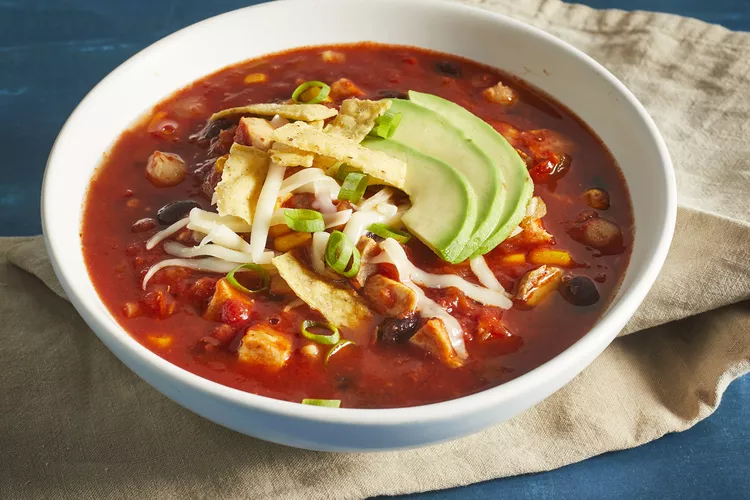

Chicken Tortilla Soup

Have you tasted a chicken-tortilla soup before! ;)
Description
If you're looking for a hearty and filling soup that will satisfy your Mexican food craving, then look no further. This chicken tortilla soup is the perfect comfort food that offers both spicy, Mexican-flair and hearty ingredients that will keep you full and happy.
Everyone will be slurping up this soup by the bowlful — so be prepared to make the tasty recipe again and again.
How to Make Chicken Tortilla Soup
Making this Chicken Tortilla Soup is really
simple, and it only takes 35 minutes. You can find the full recipe below, but here's what you can expect:
Ingredients
- 1 tablespoon olive oil
- 1 medium onion, chopped
- 3 cloves garlic, minced
- 1 (28 ounce) can crushed tomatoes
- 1 (10.5 ounce) can condensed chicken broth
- 1 ¼ cups water
- 2 teaspoons chili powder
- 1 teaspoon dried oregano
- 1 (15 ounce) can black beans, rinsed and drained
- 2 large boneless chicken breast halves, cooked and cut into bite-sized pieces
- 1 cup whole corn kernels, cooked
- 1 cup white hominy
- 1 (4 ounce) can chopped green chile peppers
- ¼ cup chopped fresh cilantro
- ½ cup crushed tortilla chips, or to taste
- 2 medium avocados, sliced, or to taste
- ½ cup shredded Monterey Jack cheese, or to taste
- 2 tablespoons chopped green onions, or to taste
Steps For Making the Dish
- Heat oil in a stockpot over medium heat. Add onion and garlic; saute until soft, about 5 minutes. Stir in crushed tomatoes, condensed broth, water, chili powder, and oregano; bring to a boil. Reduce heat and simmer for 5 to 10 minutes.
- Stir in black beans, cooked chicken, corn, hominy, chile peppers, and cilantro. Simmer for 10 minutes.
- Ladle soup into individual serving bowls, and top with crushed tortilla chips, avocado slices, Monterey Jack cheese, and green onions.